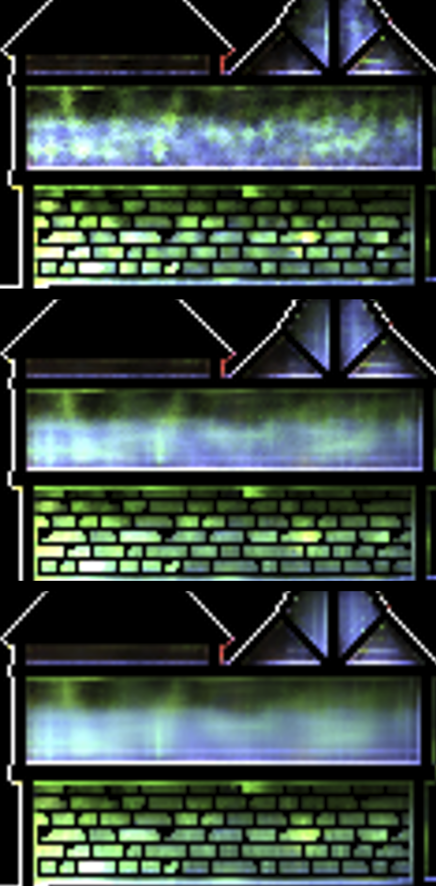

Current Project
In my latest graphics project, path-traced lighting is stored in world-space. To reduce the noise and accelerate rendering process I am working on a convolutional neural network to denoise this world-space lighting data. It is trained using Neat, simulating the denoising process on a large scale trough Cuda compute shaders for evaluation.
Older projects
In these projects I chose not to use any libraries, I wrote my own evolutionary algorithms and back-propagation from scratch to understand the complete workings of these machine learning approaches.
First "Learning"
[2017]
Playing around with basic intelligence and AI, I made a simple environment for cells to be able to 'eat' and move around and compete for survival. adding genes to this to reproduce and mutation in terms of input and output, I made my first evolving and learning intelligence.
First Neural-Network
[2018]
Having learned about the gist of neural networks and back-propagation, I implemented them from scratch, not wanting to use any libraries. My first project with this was a handwritten number classifier. Includes a program to create the training data.
Interested in the workings of the neural network, it's reasoning so to speak, I created a visualizer to see the weights of the network per pixel
First Full Evolutionary Algorithm
[2018]
In this project I created an evolutionary algorithm to evolve neural networks. This picture shows cars learning to drive trough a circuit as fast as possible. Also includes an editor written in pythonista for creating circuits.